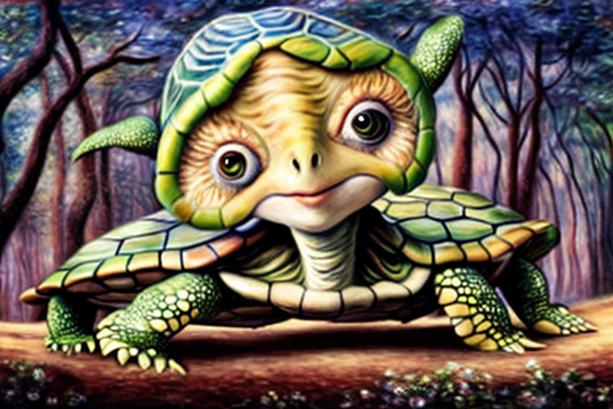
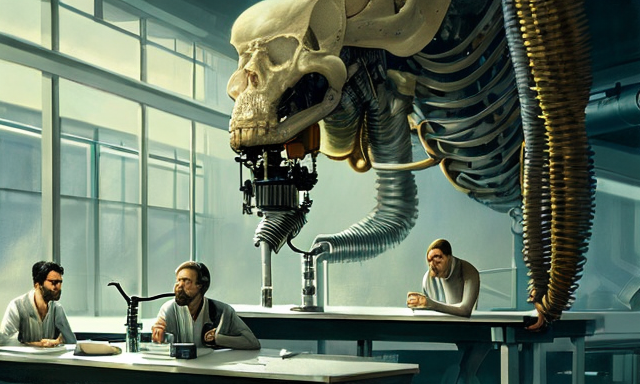

The pangolin, turtle and bat of lab experiments
HOME
Table of Contents
Forbidden love

Once upon a time, in a biolab deep in the heart of the forest, a pangolin named Timothy was madly in love with a turtle named Penelope. Timothy and Penelope had found solace in each other’s company, sharing stories of their past biolab cages and dreaming of a future where they could be free to live as they pleased. But their love was forbidden, for they were from different species, and the biolab’s cruel overseers would never allow such an abomination to continue.
One day, as they huddled together in a corner of their cage, Timothy mustered up the courage to lean in and kiss Penelope. It was a tender, innocent gesture, born out of a pure and desperate love. But as their lips touched, a strange and powerful force coursed through their bodies, sending alarms and sirens blaring throughout the lab.
Unbeknownst to Timothy and Penelope, the biolab’s scientists had been working on a secret project to create a new form of life, one that would be impervious to disease and capable of surviving in even the harshest of environments. They had been experimenting with the genetic makeup of various animals, splicing together strands of DNA in the hopes of creating a new super-species.
But their experiments had gone horribly wrong, and the lab had become a breeding ground for monstrous creatures, each more terrifying than the last. Timothy and Penelope had been the latest victims of these experiments, and their forbidden kiss had inadvertently activated the lab’s most dangerous experiment yet.
As the lab shook from the alarms, Timothy and Penelope knew they had to escape. They raced through the maze of corridors, dodging flames and dodging the twisted creatures that roamed the halls. But just as they thought they were in the clear, they were confronted by the biolab’s overseer, a mad scientist named Dr. Jekyll.
Dr. Jekyll was a cruel and sadistic man, obsessed with the power of genetics and determined to see his creations come to life, no matter the cost. He sneered at Timothy and Penelope, his eyes gleaming with a sickly green light. “You fools,” he said. “Do you not see what you have done? You have unleashed the ultimate weapon, a creature unlike any other. And it is all thanks to your foolish, forbidden love.”
Temptation in the biolab

As Dr. Jekyll segregated the two animals, Penelope had been feeling restless and unfulfilled in her relationship with Timothy. She had always been drawn to the bats that flitted around the lab, with their mysterious and alluring personalities. One day, she couldn’t resist the temptation and kissed a bat named Bruce, sending shockwaves throughout the biolab.
Timothy the pangolin was left feeling jealous and heartbroken. He had never felt such strong emotions before and he couldn’t understand why Penelope had kissed the bat when they had promised to be loyal to each other.
Little did Timothy know that there were strict rules in place at the biolab to prevent infidelity between the chosen species for hybridization. The scientists had carefully selected which animals were allowed to interact with each other and they closely monitored their behavior to ensure that they didn’t engage in any romantic or sexual relationships with other animals.
The scientists were outraged, for they had spent years carefully selecting and breeding the animals to create the perfect hybrid species. They had spent countless hours studying the genetic makeup of each animal, analyzing their behavior and personality traits, and ensuring that they were the perfect match for each other.
When Penelope kissed Bruce, it threw a wrench into their plans and threatened to derail their entire project. They quickly sprang into action, devising a new set of rules to prevent such incidents from happening again. They separated the animals into different chambers, and only allowed them to interact under strict supervision. They also implanted tracking devices in each animal to monitor their movements and ensure that they stayed within their designated areas.
Despite these measures, Penelope and Bruce continued to meet in secret, stealing kisses whenever they could. Timothy, meanwhile, was left feeling increasingly isolated and alone. He longed for the days when he and Penelope had shared a special bond, but now it seemed like that bond was broken forever.
The unforeseen hybrid

Dr. Jekyll leaned back in his chair and took a deep drag from his cigarette. “Did you hear about that bat, Bruce?” he asked his colleague, Dr. Martinez.
“The one who goes around kissing animals of other species?” Dr. Martinez replied, leaning forward with interest.
“That’s the one,” Dr. Jekyll said, exhaling a cloud of smoke. “I heard he kissed a turtle yesterday. Could you imagine what kind of hybrid we could get from that?”
Dr. Martinez raised an eyebrow. “I don’t think we want to know,” he said. “If those two species were to hybridize, it could have some unexpected consequences.”
Dr. Jekyll shrugged. “I suppose you’re right. But think of the possibilities! We could create an entirely new species, with traits from both the bat and the turtle. It could be revolutionary.”
Dr. Martinez shook his head. “I’m not sure it’s worth the risk,” he said. “The last thing we need is another Frankenstein’s monster running around the lab.”
But Dr. Jekyll was already lost in thought, envisioning the potential of such a hybrid. He could see it now - a creature with the wings and echolocation of a bat, combined with the shell and armor of a turtle. It would be a formidable predator, capable of taking down prey that no other animal could touch.
As he continued to muse, Dr. Jekyll failed to notice the ominous signs that were beginning to appear in the lab. The animals were becoming restless and agitated, their behavior growing more erratic and unpredictable with each passing day.
And then, one fateful night, it happened. Bruce managed to sneak out of his chamber and spread his kisses to other animals of different species, resulting in a catastrophic hybrid that no one could have predicted.
The creature that emerged from that unholy union was like nothing anyone had ever seen before. It had the wings of a bat,the shell of a turtle, and the claws of a tiger. It was a monster in every sense of the word, and it was hungry for blood.
As it rampaged through the lab, tearing apart anything and anyone in its path, it broke out of a window and run out somewhere in the backyard, a terrifying reminder of the consequences of scientific arrogance and hubris.
Containment protocol

As Dr. Jekyll and Dr. Martinez surveyed the devastation that had been wrought by the escaped hybrid, they knew that they had to act quickly. The lab protocol for dealing with such an event had been carefully crafted, but it was clear that it had failed in this case.
“We need to implement the contingency plan,” Dr. Martinez said, his voice grim. “We have to make sure that this information doesn’t leak to the press.”
Dr. Jekyll nodded in agreement. “I’ll make the necessary calls,” he said. “We’ll have to sanitize the area, contain the creature, and dispose of any evidence.”
Dr. Martinez pulled out a clipboard and began ticking off items on a list. “We’ll need to set up a perimeter around the lab, using non-lethal methods to contain the hybrid,” he said. “We’ll also need to get a team in there to clean up the mess and make sure that there’s no evidence left behind.”
Dr. Jekyll grimaced. “And what about the hybrid itself?” he asked.
“We’ll have to sedate it and transport it to a secure facility,” Dr. Martinez replied. “From there, we can study it and determine the best course of action.”
Dr. Jekyll nodded, his mind racing with the implications of what had happened. He knew that they couldn’t afford any more mistakes, that they had to make sure that nothing like this ever happened again.
As they set to work, Dr. Jekyll and Dr. Martinez knew that they were dealing with a creature that was unlike anything they had ever seen before. It was intelligent, adaptable, and terrifyingly dangerous, and they knew that it would take all of their skill and expertise to contain it.
In the end, they were successful in their efforts, managing to contain the hybrid and sanitize the area before any information could leak to the press. But as they sat in their offices, looking out at the ruins of the biolab, they knew that they had come too close to disaster.
Shifting blame

As Dr. Jekyll and Dr. Martinez looked out over the ruined windows of the biolab, they knew that they were in trouble. The hybrid that had escaped had caused a massive panic, and the media was swarming around the site, hungry for any information they could get.
“We’re going to lose our funding if this gets out,” Dr. Jekyll said, his voice grim. “We have to find a way to spin this, to make it look like it wasn’t our fault.”
Dr. Martinez nodded in agreement. “We need a scapegoat,” he said. “Someone to blame for the hybrids, someone who isn’t us.”
As they searched for a solution, their eyes fell on a nearby village, a small cluster of houses nestled in the foothills. It was said that the women of the village had a habit of kissing bats, believing that it would bring them good luck and prosperity.
“Those women are the ones responsible,” Dr. Jekyll said, his voice rising with excitement. “They’ve created these hybrids, not us!”
Dr. Martinez nodded, seeing the potential in the idea. “We’ll spread the word,” he said. “We’ll make sure that everyone knows that the hybrids came from the village, not the biolab.”
And so, Dr. Jekyll and Dr. Martinez set to work, spreading rumors and whispers about the village and the dangerous creatures that lurked within. They painted the women as reckless and irresponsible, willing to risk the safety of the world for their own personal gain.
And as the media descended upon the village, hungry for a story to sell, they found the perfect narrative in the dangerous hybrids and the reckless women who had created them.
In the end, the biolab was spared, its funding secured and its reputation intact. But as Dr. Jekyll and Dr. Martinez watched the villagers being led away in handcuffs, they knew that they had set a dangerous precedent, that they had let their own selfish desires and ambitions cloud their judgment and their morals.